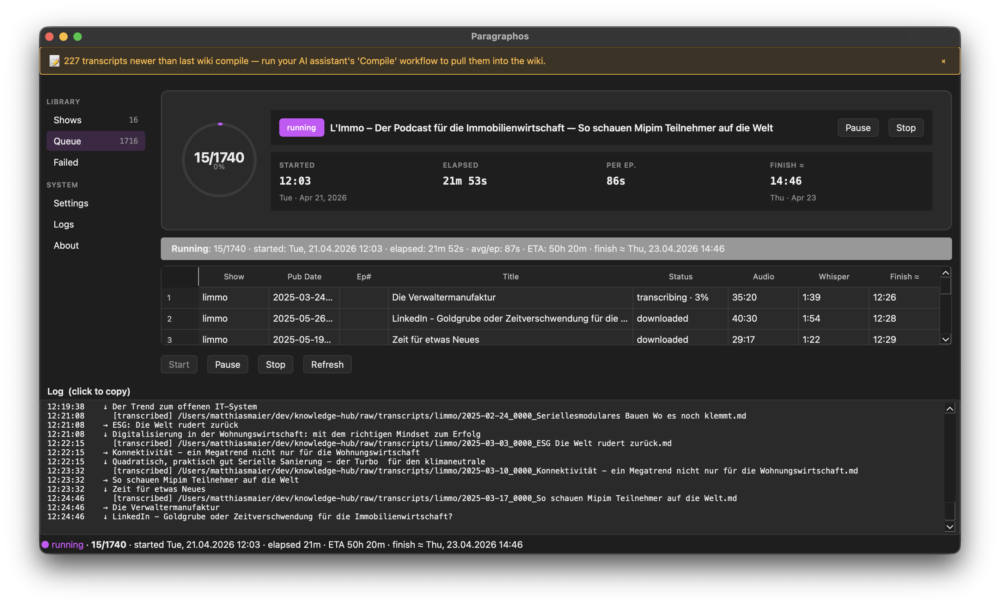

Paragraphos
Local podcast + YouTube → whisper.cpp transcription pipeline for macOS.
Everything runs on your Mac. No cloud APIs, no telemetry, no account.

What it does
🎧 Podcasts
Find feeds by name (iTunes Search) or paste an RSS URL. Daily check; resumable downloads.
📺 YouTube
Subscribe to channels. Captions-first (requested lang → en → any), whisper fallback when none usable.
📥 Anything else
Drop audio / video files, paste a URL (yt-dlp generic), or watch a folder. Bulk-import a directory.
📝 Local transcribe
whisper.cpp on Metal — large-v3-turbo by default. Parallelised across N workers. Audio never leaves the machine.
🩺 Self-diagnosing
Failed feeds bucketed (DNS / TLS / 404 / 5xx / NAT64 / …) with one-click Retry now.
🤖 Headless / agent-controllable
23-command CLI with --json inspection so an LLM agent can drive the whole app.
Install
Download the latest .dmg from the
releases page,
drag Paragraphos.app to /Applications,
then walk through the
first-launch Gatekeeper steps.
The first-run wizard handles Homebrew, whisper-cpp, ffmpeg, and the ~1.5 GB Whisper model.
Build from source instead:
git clone https://github.com/madevmuc/paragraphos.git
cd paragraphos
python3.12 -m venv .venv
.venv/bin/pip install -r requirements.txt -r dev-requirements.txt
PYTHONPATH=. .venv/bin/python app.pyCLI
23 commands with --json inspection — full GUI parity for headless / agent control.
See the CLI section in the README for the table + an example task chain.